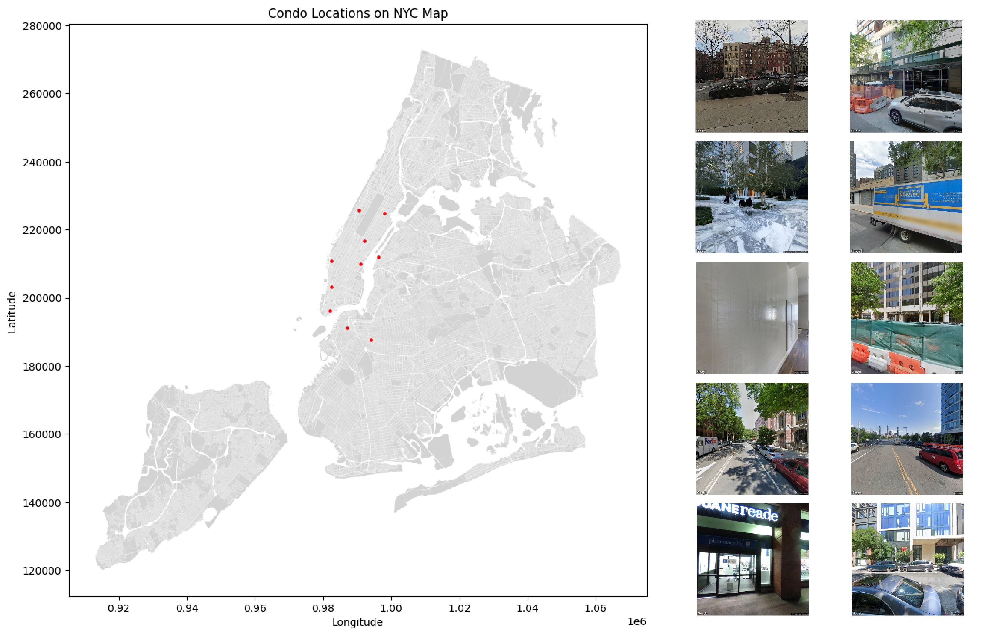
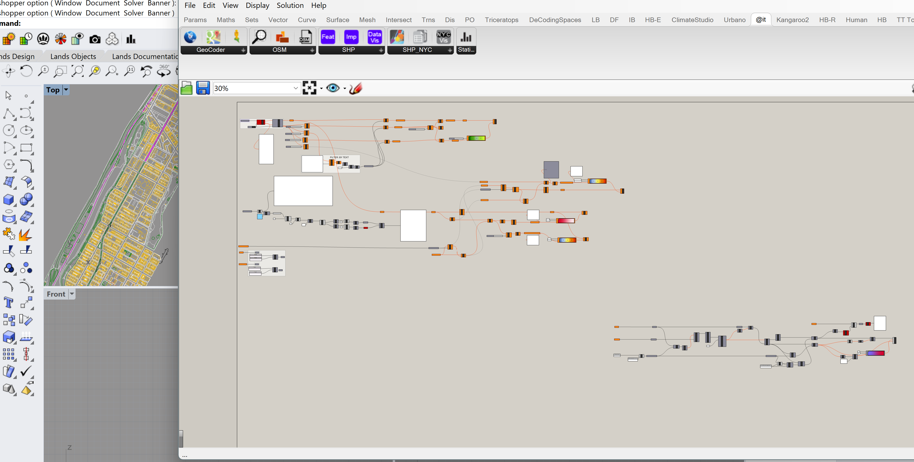
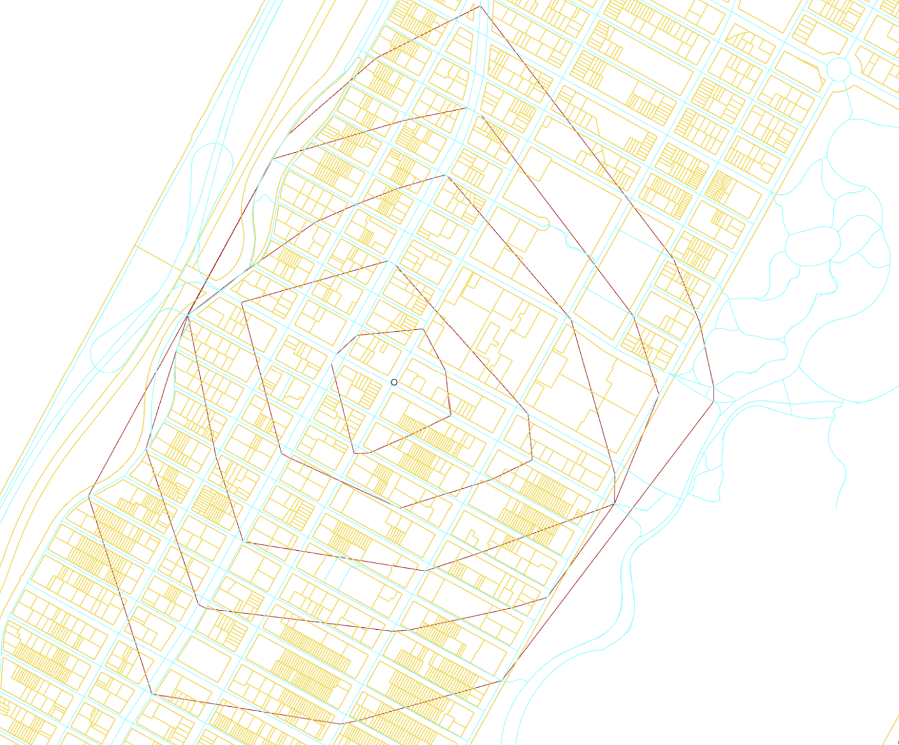
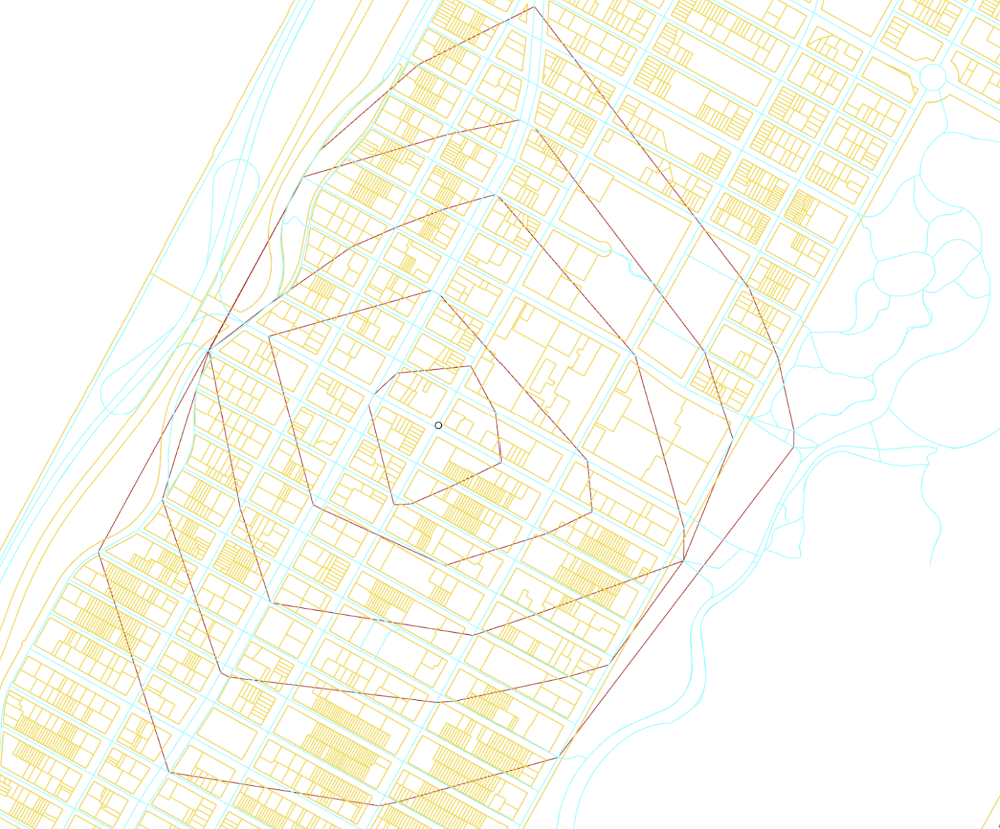
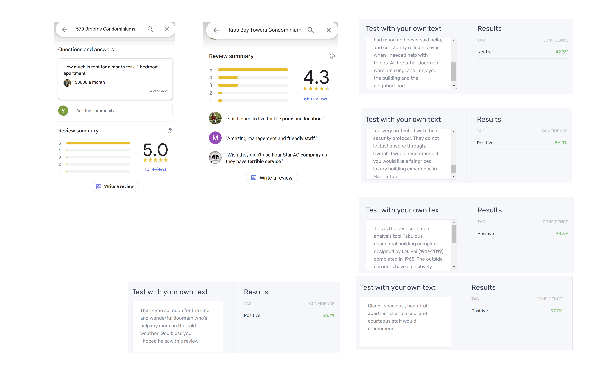

Yuxi Dai
Table of Contents
01 – Systems - An Analysis of NYPL
What is the system?
When I think of the system, I think of its different elements and what makes up the system. As stated in “Thinking in Systems,” the goal or purpose is often overlooked when we are trying to understand the system.
The New York Public Library (NYPL) System is an extensive network of libraries in the New York City area. It is a dynamic system whose purpose, as claimed by the leadership of the NYPL, is to use places like public libraries where people can come together to learn from and understand one another – and help improve the world.
Whom does it impact?
The whole system includes many elements, both human and non-human, such as books, special collections, online classes, museum sources, donors, trustees, and users. Feedback loops occur everywhere within the system. The system runs when information flows. People using the resources keep the system running. For example, when people search for resources and find them at the NYPL, they connect with the library, access the resources, gain valuable experiences, and are likely to return or recommend the library to others. At the same time, many loops are happening with different elements. These loops help achieve the ultimate goal, maintain the system’s energy, and encourage continued use and support.
In the NYPL system, the hierarchy is not as rigid compared to many other organizations. At different levels, many people work collaboratively, communicating and coordinating to achieve common goals. This hierarchy encourages a more inclusive and dynamic environment, allowing feedback loops to run smoothly.
"Libraries are for everyone."
The boundaries of the NYPL system seem hard to define; many agencies and organizations are involved, and it can keep expanding as events and resources are created. The expanding boundaries are, I think, one of the factors that make the NYPL system successful. There are numerous collaborations with schools, museums, and other agencies.
Goldberg machine
02 – Authorships
Authorships
Looking at my user journey, it becomes clear that different parties can have varying levels of control and authorship within the system. Users should have authorship over their ideas and original content. For example, when using modeling software like Rhino or SketchUp, the user who creates the design is the primary author. It is the person or group that created the software has the authorship. They gave a lot of freedom to the users.
In terms of AI, authorship becomes more complex. When generative AI tools are involved, it is the user who provides input and guidance to the AI, shaping the final output, and thus holding primary authorship. However, it is crucial for users to recognize the contributions of those who developed, trained the AI systems and know the data that AI is trained on.
Users, on their part, are responsible for how they utilize these tools. They must consider their intentions and ensure their use aligns with ethical guidelines and legal standards. Users can customize AI outputs to meet their specific needs, but they must do so responsibly. As an author, I bear responsibility for the practice and data I choose to include in my work, as well as setting the goals and tone of the project. Businesses which provide and manage these AI tools, must be held accountable for legal compliance and the ethical deployment of the technologies.
AI itself should not hold copyrights; it is the creators—the developers of the AI systems and the users who guide the AI—who hold these rights. Seeing various levels of authorship is important in maintaining ethical standards and respecting the intellectual properties from different people.
Zine!
AI Artifact Playground
"Our authorship philosophy embraces the evolving nature of creative ownership, particularly in the context of generative AI. In this model, the concept of authorship extends beyond traditional boundaries, empowering AI and users to become co-creators.
We provide tools that enable users to use AI-generated assets to produce unique works that reflect their personal vision and creativity. This collaborative approach coordinates content creation. It operates without being constrained by conventional authorship. By distributing control, users can customize their experience and influence the system, while designers maintain the ethical and foundational rules of the tools."
Credit to: Yilin + Yuxi + Xiaoya
03 – Politics
DATA Manifesto
In exploring why NYC's housing prices are so high, diverse datasets are key. Street views and images illuminate real-time living conditions, highlighting disparities and the impact of real estate developers and speculators. Google Reviews of apartments offer subjective yet vital insights into resident experiences, providing a first-person narrative view. Addresses of condos, like 570 Broome Condominiums and 432 Park Avenue Condominiums, and their market values reveal economic trends, while vacancy rates expose potential overbuilding or underutilization.
These datasets align with my hypothesis about high rent drivers. Some, like resident reviews, are subjective but crucial for understanding personal experiences. Finding supportive data was moderately challenging due to the fragmented nature of real estate information. Together, these datasets paint a picture of economic imbalance and housing scarcity, but may omit broader systemic issues like policy impacts.
The politics of data collection, often by real estate developers, can bias outcomes, impacting accuracy. Some methods, like reviews, offer personal narratives, while market data provide a broader perspective. My preference leans towards visual and qualitative data, offering tangible insights. Addressing data gaps might involve conducting user interviews, surveys, or deploying sensors to capture nuanced, real-time data, giving a holistic view of NYC's housing dynamics.
METHOD Manifesto
I am using:
narrative - mapping - Photoshop
exploratory - data visulization - GH-geojson
exploratory - analysis - sentimenmt analyzer
Narrative mapping in Photoshop allowed for a compelling and creative storytelling approach, effectively visualizing connections and relationships. This method's affordance is its ability to provide a clear, visual narrative, making complex information more accessible and engaging.
For exploratory data visualization, GH-GeoJSON was instrumental. This tool's strength lies in its capacity to handle and display geographical data, which is crucial for systems involving spatial analysis. It allowed for dynamic and interactive mapping, making it easier to identify patterns and insights within the data.
Sentiment analysis tools provided an effective means of exploratory analysis. By processing textual data, these tools offered insights into the emotional tone and public perception, which are vital for understanding social systems and trends. Some tools were better suited to the system of interest due to their specialized capabilities, such as handling large datasets or providing real-time analysis. These methods and tools collectively enhanced the visualization process, making it more comprehensive and insightful.
Sketch Prototypes
narrative - mapping - Photoshop
exploratory - data visulization - GH-geojson
 

exploratory - analysis - sentimenmt analyzer
04 – Governance
Trend - Aging Society
Design Fiction
In the year 2045, the serene kitchen of an elderly woman is seamlessly integrated with advanced technology, reflecting the future of healthcare in an aging society. She sits comfortably at a glass table, enjoying a healthy breakfast. The room is bathed in soft light, with a vase of vibrant flowers adding a touch of natural beauty.
Surrounding her are holographic displays and interfaces, forming an intricate monitoring system that ensures her well-being. These futuristic displays provide real-time updates on various health metrics. The kitchen is designed with the elderly in mind, featuring ergonomic appliances and smart assistants that respond to her needs. The seamless integration of these technologies into her daily routine exemplifies how design can enhance the quality of life for an aging population.
This design fiction presents a vision where technology and humanity coexist harmoniously. The monitoring system acts as a guardian, providing the woman with a sense of security and independence. It highlights a future where aging is not feared but embraced, with innovations ensuring that the elderly can live their lives with dignity, comfort, and peace of mind.
Credit to Catherine Ye & Yuxi Dai